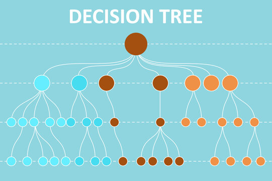

Projects
TourDrone Web Application
Designed and developed a web application to provide virtual tours using drone technology, enhancing the user experience with interactive maps and real-time flight data.
Breast Cancer Classifier
Engaged with the esteemed Breast Cancer Wisconsin Data Set with a mission to design a top-tier classifier targeting early detection of breast cancer malignancies. Executed rigorous dataset exploration, uncovering vital data patterns, correlations, and potential outliers that informed the subsequent stages of the project. Masterfully employed Matplotlib to craft insightful visualizations of data distributions, achieving a holistic understanding of the interplay between diverse features. Harnessing the power of TensorFlow, conceived and trained a sophisticated deep learning model, resulting in a classifier with standout accuracy metrics.

Hardware Rental Store App
Engineered a dynamic application using JavaScript, enabling users to search and rent hardware items, with each user action triggering specific SQL database queries. Designed comprehensive Entity-Relationship (ER) diagrams, ensuring a coherent database structure while providing in-depth documentation of database design and user flows. Adopted the Software Development Life Cycle (SDLC) methodology, emphasizing systematic, high-quality development phases. Collaborated effectively using Git for version control, streamlining teamwork and ensuring consistent code quality.
Flight Reservation System
Developed an object-oriented Flight Reservation System in Java, designed to enhance the user experience in managing travel plans. Enables users to effortlessly browse through a comprehensive list of available flights, providing transparency and choice in travel arrangements. Empowers travelers with the ability to book and secure their preferred seats, as well as offering the flexibility to cancel reservations as their plans evolve. Offers a detailed graphical representation of the aircraft's seating configuration, allowing users to visualize and select their desired seats based on layout and availability.